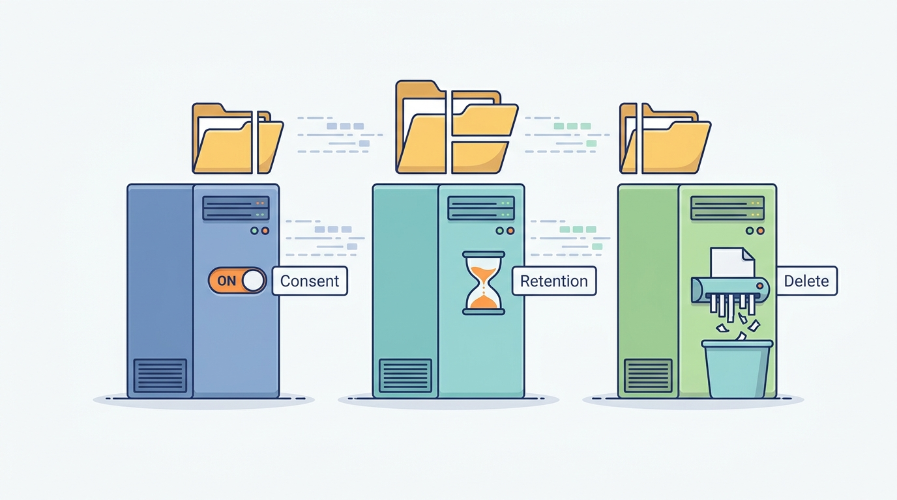

Part VIII — TRUST: Security, Privacy and Regulation
Whose Data Is It? Privacy, Consent and Retention
AI-assisted: researched and written with Claude Code and Codex; illustrations generated with Gemini and OpenAI image tools. How this works
